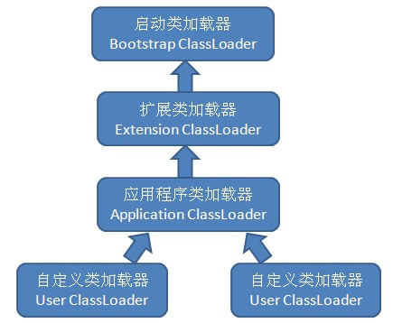

本文主要介绍java虚拟机执行子系统，包括类文件结构、虚拟机加载机制、虚拟机字节码执行引擎，最后还给出了类加载以及执行子系统的案例和实战。
第六章 类文件结构
无关性的基石
各种不同平台的虚拟机与所有平台都统一使用的程序存储格式–字节码（ByteCode）是构成平台无关性的基石。
语言无关性就是实现让其他语言运行在java虚拟机之上的可能性。
商业机构和开源机构已经在Java语言之外发展出了一大批在Java虚拟机之上运行的语言，比如Clojure、Groovy、JRuby、Jython、Scala等。
实现语言无关性的基础仍然是虚拟机和字节码存储格式。Java虚拟机不和包括Java在内的任何语言绑定，只和”Class文件”这种特定的二进制文件格式所关联。Class文件中包括了Java虚拟机指令集和符号表以及若干其他辅助信息。
Java语言中各种变量、关键字和运算符号的语义最终都是由多条字节码命令组合而成的。因此，有一些Java语言本身无法有效支持的语言特性不代表字节码本身无法有效支持，这也为其他语言实现一些有别于Java的语言特性提供了基础。
Class类文件的结构
任何一个Class文件都对应着唯一一个类或者接口的定义信息，但反过来说，类或接口并不一定都得定义在文件中（譬如类或接口也可以通过类加载器直接生成）
“Class文件格式”，实际上它并不一定以磁盘文件的形式存在。
Class文件是一组以8个字节为基础单位的二进制流，各个数据项目严格按照顺序紧凑地排列在Class文件中，中间没有任何分割符。当遇到需要占用8位字节以上空间的数据项时，会按照高位在前的方式分割成8位字节进行存储（高位在小地址，也就是大端模式）
Class文件格式采用一种类似C语言结构体的伪结构来存储数据，伪结构包括两种数据类型：无符号数和表、
无符号数属于基本的数据类型，以u1、u2、u4、u8来分别表示1个字节、2个字节、4个字节和8个字节的无符号数，无符号数可以用来描述数字、索引引用、数量值或者按照utf-8编码构成字符串值。
表是由多个无符号数或者其他表作为数据项构成的复合数据类型，所有表都习惯性地以”_info”结尾
当需要描述同一类型但数量不定的多个数据的时候，经常会使用一个前置的容量计数器加若干连续的数据项的形式，这时候称这一系列连续的某一类型的数据为某一类型的集合。
无论是顺序还是数量，甚至于数据存储的字节序这样的细节，都是被严格限定的，哪一个字节代表什么含义，长度是多少，先后顺序如何，都不允许改变。
1. 魔数与Class文件的版本
每个Class文件的头四个字节称为魔数，它的作用是确定这个文件是否为一个能被虚拟机接受的Class文件
Java的Class文件的魔数值为:0xCAFEBABY（咖啡宝贝）
紧接着魔数的4个字节存储的是Class文件的版本号：第5个和第6个字节是次版本号；第7个和第8个字节存储的主版本号。
高版本的JDK能向下兼容以前版本的Class文件，但不能运行以后版本的Class文件，即使文件格式并未发生任何变化，虚拟机也必须拒绝执行超过其版本号的Class文件
2. 常量池
紧挨着主次版本号的是常量池。常量池可以理解为Class文件中的资源仓库。
常量池是Class文件中第一个出现的表类型数据项目
常量池的入口需要放置一个u2类型的数据，代表常量池容量计数值。比如，常量池容量为0x0016，也就是十进制的22，这就代表了常量池中有21项常量，索引值在1~21.第0项空出来是有特殊考虑的，，代表“不引用任何一个常量池项目”的含义，这种情况就可以把索引值置为0来表示。
常量池中主要存放两大类常量：字面量和符号引用
字面量：比较接近于Java语言层面的常量概念，比如文本字符串、声明为final的常量值等。
符号引用：
包括三类常量：类和接口的全限定名、字段的名称和描述符、方法的名称和描述符
Java代码在Javac编译的时候，并不像C和C++那样有“连接”这一步骤，而是在虚拟机加载Class文件的时候进行动态连接。也就是说，在Class文件中不会保存各个方法、字段的最终内存布局信息，因此这些字段、方法的符号引用不经过运行期转换的话无法得到真正的内存入口地址。当虚拟机运行的时候，需要从常量池中获取对应的符号引用，再在类创建时或运行时解析、翻译到具体的内存地址中去。
常量池中每一项常量都是一个表，一共有14中常量类型（参见《深入理解JVM》的169页到173页）
3. 访问标志
在常量池结束之后，紧接着的两个字节是访问标志，这个标志用于识别一些类或者接口层次的访问信息。包括：这个Class是类还是接口；是否定义为public类型；是否定义为abstract类型；如果是类的话，是否被声明为final等。
access_flag中一共有16个标志位可以使用，当前只定义了8个。
4. 类索引、父类索引和接口索引集合
类索引和父类索引都是一个u2类型的数据，而接口索引集合是一组u2类型的数据的集合，Class文件中由这三项数据来确定这个类的继承关系。
类索引用于确定这个类的全限定名，父类索引用于确定这个类的父类的全限定名。
接口索引集合就用来描述这个类实现了哪一些接口，这些被实现的接口将按照implements语句后的接口顺序从左到右排列在接口索引集合中。
对于接口索引集合，入口的第一项–u2类型的数据为接口计数器，表示索引表的容量。
5. 字段表集合
字段表用于描述接口或类中声明的变量。字段包括类级变量以及实例级变量，但不包括在方法内部声明的局部变量。
Java中一个字段可以包括的信息：
(1)字段的作用域(public、private、protected修饰符)
(2)实例变量还是类变量(static修饰符)
(3)可变性(final)
(4)并发可见性(volatail修饰符，是否强制从主内存读写)
(5)可否被序列化(transient修饰符)
(6)字段数据类型(基本类型、对象、数组)
(7)字段名称
字段修饰符放在access_flag项目中。跟随access_flag标识的是两项索引值：name_index和descriptor_index。它们都是对常量池的引用，分别代表着字段的简单名称以及字段和方法的描述符。
描述符的作用是用来描述字段的数据类型、方法的参数列表（包括数量、类型以及顺序）和返回值。描述符标识字符含义在《深入理解JVM》的177页可以查阅。对于数组类型，每一个维度将使用一个前置的”[“字符来描述，比如定义一个”java.lang.String[][]”类型的二维数组，将被记录为”[[Ljava/lang/String”；一个整数数组”int[]”将被记录为”[I”
用描述符来描述方法的时候，按照先参数列表，后返回值的顺序描述。方法int indexOf(char[] source,int offset,int count,char[] target,int tOffset,int tCount,int fromIndex)的描述符为”([CII[CIII)I”
在desciptor_index之后跟随着一个属性表集合用于存储一些额外的信息。
字段表集合中不会列出从超类或者父接口继承而来的字段，但有可能列出原本Java代码之中不存在的字段，譬如在内部类中为了保持对外部类的访问性，会自动添加指向外部类实例的字段。
6. 方法表集合
方法表的结构如同字段表一样，依次包括了访问标志(access_flags)、名称索引(name_index)、描述符索引(descriptor_index)、属性表集合(attributes)几项。
因为volatile关键字和transient关键字不能修饰方法，所以方法表的访问标志中没有了ACC_VOLATILE标志和ACC_TRANSIENT标志。与之相对的，syschronized、native、scriptfp和abstract关键字可以修饰方法。
方法里的Java代码，经过编译器编译成字节码指令后，存放在方法属性表集合中一个名为”Code”的属性里面。
与字段表集合相对应的，如果父类方法在子类中没有被重写（Override），方法表集合中不会出现来自父类的方法信息。但同样的，有可能会出现由编译器自动添加的方法，最典型的便是类构造器”
在Java中，要重载一个方法要求必须拥有一个与原方法不同的特征签名，特征签名就是一个方法中各个参数在常量池中的字段符号引用的集合。如果两个方法有相同的名称和特征签名，但返回值不同，那么也是可以合法共存于同一个Class文件中的。
7. 属性表集合
在Class文件、字段表、方法表都可以携带自己的属性表集合。
与Class文件中其他的数据项目要求严格的顺序、长度和内容不同，属性表集合不再要求各个属性表具有严格顺序，并且只要不与已有属性名重复，任何人实现的编译器都可以向属性表中写入自己定义的属性信息。
虚拟机规范预定义的属性可以参考《深入理解JVM》的180页。
对于每一个属性，它的名称需要从常量池中引用一个CONSTANT_Utf8_info类型的常量来表示，而属性值的结构则是完全自定义的。
(1)Code属性
Java程序方法体中的代码经过Javac编译器处理后，最终变为字节码指令存储在Code属性内。
接口或者抽象类中方法就不存在Code属性。
Code属性表的结构：
attribute_name_index是一项指向CONSTANT_Utf8_info型常量的索引，常量值固定为”Code”，代表了属性的属性名称
attribute_length指示了属性值的长度，由于属性名称索引和属性长度一共6个字节，所以属性值的长度固定为整个属性表长度减去6个字节。
max_stack代表了操作数栈深度的最大值。虚拟机运行的时候需要根据这个值来分配栈帧中的操作数深度。
max_locals代表了局部变量表所需的存储空间。max_locals单位是Slot,Slot是虚拟机为局部变量表分配内存所使用的最小单位。对于长度不超过32位的数据类型，每个局部变量占用1个Slot,而double和long这两种64位的数据类型则需要2个Slot来存放。
一个方法不允许超过65535条字节码指令，即它实际只使用了u2的长度，如果超出这个限制，Javac也会拒绝编译。比如JSP编译时有可能会超过u2的长度。
Code属性：如果把Java程序中的信息分为代码(Code，方法体里面的Java代码)和元数据(Metadata，包括类、字段、方法定义以及其他信息)两部分，那么整个Class文件中，Code属性用于描述代码，其他所有数据项目都用于描述元数据。
方法参数（包含实例方法隐含的this）、显式异常处理器参数、方法体中定义的局部变量都使用局部变量来存放。因此在实例方法的局部变量表中至少会存在一个指向当前对象实例的局部变量，局部变量表中也会预留出第一个Slot位来存放对象实例的引用。
编译器使用异常表而不是简单的跳转命令来实现Java异常以及finally处理机制。
(2) Exception属性
Exception属性的作用是列举出方法中可能抛出的受查异常，也就是方法描述时在throws关键字后面列举的异常。
number_of_exception项表示可能抛出的受查异常数量;
exception_index_table项表示一个指向常量池中CONSTANT_Class_info型常量的索引，代表该受查异常的类型。
(3) LineNumberTable属性
LineNumberTable属性用于描述Java源码行号与字节码行号之间的对应关系
(4) LocalVariableTable属性
LocalVariableTable属性用于描述帧栈中局部变量与Java源码中定义的变量之间的关系
(5) SourceFile属性
SourceFile属性用于记录生成这个Class文件的源码文件名称
(6) ConstantValue属性
ConstantValue属性是用于通知虚拟机自动为静态变量赋值。只有被static关键字修饰的变量才可以使用这项属性。
Java中对于非static类型的变量（也就是实例变量）的赋值是在实例构造器
(7) InnerClasses属性
InnerClasses属性用来记录内部类与宿主类之间的关联。如果一个类中定义了内部类，那编译器将会为它以及它所包含的内部类生成InnerClasses属性。
数据项number_of_classes代表需要记录多少个内部类信息，每个内部类的信息都由一个inner_classes_info表进行描述。
(8) Deprecated及Synthetic属性
Deprecated和Synthetic两个属性都属于标志类型的布尔属性，只存在有或者没有的区别，没有属性值的概念。
Deprecated属性用于表示某个类、字段或方法，已经被程序作者定为不再推荐使用（在代码中使用@deprecated注解来设置）。
Synthetic属性代表此字段或方法并不是有Java源码直接产生的，而是由编译器自行添加的。
(9) StackMapTable属性
StackMapTable属性在JDK1.6发布之后增加到了Class文件规范中，这个属性会在虚拟机类加载的字节码验证阶段被新类型检查验证器使用，目的在于代替以前比较消耗性能的基于数据流分析的类型推到验证器。
(10) Signature属性
任何类、接口、初始化方法或成员的泛型签名如果包含类型变量或参数化类型，则Signature属性会为它记录泛型签名信息。
之所以要专门使用这样一个属性去记录泛型类型，是因为Java语言的泛型采用的是擦除法实现的伪泛型，在字节码(Code属性中)，泛型信息编译(类型变量、参数化类型)之后都统统被擦除掉。
擦触发无法将泛型类型与用户定义的普通类型同等对待，例如运行期做反射时无法获取泛型信息。但是Signature属性就是为了弥补这个缺陷而增设的。
(11) BootstrapMethods属性
这个属性用于保存invokedynamic指令引用的引导方法限定符。如果某个类文件结构的常量池中曾经出现过CONSTANT_InvokeDynamic_info类型的常量，那么这个类文件的属性表中必须存在一个明确的BootstrapMethods属性
字节码指令简介
Java虚拟机的指令由一个字节长度的、代表着某种特定操作含义的数字(称为操作码，Opcode)以及跟随其后的零至多个代表此操作所需参数(也称为操作数，Operands)而构成。由于Java虚拟机采用面向操作数栈而不是寄存器架构，所以大多数指令不包括操作数，只有一个操作码。
字节码指令集是一种指令集架构，由于限制了Java虚拟机操作码的长度为一个字节，意味着指令集操作码总数不可能超过256条；又由于Class文件格式放弃了编译后代码的操作数长度对齐，意味着虚拟机处理那些超过一个字节的数据的时候，不得不在运行时从字节中重建出具体数据的结构。
用一个字节来代表操作码，也是为了尽可能获得短小精干的编译代码。
1. 字节码与数据类型
iload指令用于从局部变量表中加载int型的数据到操作数栈中，而fload指令加载的是float类型的数据。
操作码助记符中都有特殊的字符来表示专门为哪一种数据类型服务：i代表对int类型的数据操作，l代表long，s代表short，b代表byte，c代表char，f代表float，d代表double，a代表reference
由于Java虚拟机的操作码长度只有一个字节，所以为指令集的设计带来很大压力，指令集将会被故意设计成非完全独立的(即并非每一种数据类型和每一种操作都有对应的指令)
2. 加载和存储指令
| 将一个局部变量加载到操作栈 | iload,iload< n>,lload,lload< n>,fload,fload< n>,dload,dload< n>,aload,aload_< n> |
|---|---|
| 将一个数值从操作数栈存储到局部变量表 | istore,istroe< n>,lstore,lstore< n>,fstore,fstore< n>,dstore,dstore< n>,astore,astore_< n> |
| 将一个常量加载到操作数栈 | bipush,sipush,ldc,ldc_w,ldc2_w,aconst_null,iconstml,lconst< l>,fconst< f>,dconst< d> |
| 扩充局部变量表访问索引的指令 | wide |
存储数据的操作数栈和局部变量表主要就是由加载和存储指令进行操作的，除此之外，还有少量指令，比如访问对象的字段或数组元素的指令也会向操作数栈传输数据。
3. 运算指令
运算或算术指令用于对两个操作数栈上的值进行某种特定运算，并把结果重新存入到操作数栈顶
Java虚拟机规范没有明确定义过整型数据溢出的具体运算结果，仅规定了在处理整型数据的时候，只有除法指令(idiv和ldiv)以及求余指令(irem和lrem)中当出现除数为0的时候会导致虚拟机排除ArithmeticException异常，其余任何整型数运算场景都不应该抛出运行时异常。
4. 类型转换指令
JVM直接支持小范围类型转换到大范围类型(宽化类型转换)
- int可以直接转换为long,float和double
- long可以直接转换为float,double
- float可以直接转换为double
处理窄化类型转换的时候，必须显式地使用转换指令来完成。
Java虚拟机规范中明确规定数值类型的窄化转换指令永远不可能导致虚拟机抛出运行时异常。
5. 对象创建与访问指令
| 类型 | 指令 |
|---|---|
| 创建类实例的指令 | new |
| 创建数组的指令 | newarray,anewarray,mulitanewarray |
| 访问类字段（static字段，或者称为类变量）和实例字段（非static字段，或者称为实例变量）的指令 | getfield,putfield,getstatic,putstatic。 |
| 把一个数组元素加载到操作数栈的指令 | baload,caload,saload,iaload,laload,faload,daload,aaload |
| 把一个操作数栈的值存储到数组元素中的指令 | bastore,castore,sastore,iastore,fastore,dastore,aastore |
| 取数组长度的指令 | arraylength |
| 检查类实例类型的指令 | instanceof,checkcast |
6. 操作数栈管理指令
| 类型 | 指令 |
|---|---|
| 将操作数栈的栈顶一个或者两个元素出栈 | pop,pop2 |
| 复制栈顶的一个或者两个数值并将复制值或者双分的复制值重新压入栈顶 | dup,dup2,dup_x1,dup2_x1,dup_x2,dup2_x2 |
| 将栈最顶端的两个数值互换 | swap |
7. 控制转移指令
控制转移指令就是在有条件或者无条件修改PC寄存器的值
| 类型 | 指令 |
|---|---|
| 条件分支 | ifeq,iflt,ifle,ifne,ifgt,ifge,ifnull,ifnonnull,if_icmpeq,if_icmpne,ificmplt,ificmpgt,if_icmple,if_icmpge,if_acmpeq,if_acmpne |
| 复合条件分支 | tableswitch,lookupswitch |
| 无条件分支 | goto,goto_w,jsr,jsr_w,ret |
8. 方法调用和返回指令
| 指令 | 作用 |
|---|---|
| 调用对象的实例方法，根据对象实际类型进行分派 | invokevirtual |
| 调用接口方法，在运行时搜索一个实习了这个接口方法的对象，找出适合的方法进行调用 | invokeinterface |
| 调用一些需要特殊处理的实例方法，包括初始化方法，私有方法和父类方法 | invokespecial |
| 调用类方法 | invokestatic |
| 在运行时动态解析出调用点限定符所引用的方法并执行该方法 | invokedynamic |
9. 异常处理指令
在Java程序中显示抛出异常的操作(throw语句)都是由athrow指令来实现的。
在Java虚拟机中，处理异常(catch语句)不是由字节码指令实现的，而是采用异常表来完成的。
10. 同步指令
同步一段指令集序列通常是由java语言中的synchronized语句块来表示，JVM指令集中有monitorenter和monitorexit两条指令来支持synchronized关键字的语义。
公有设计和私有实现
Java虚拟机规范描绘了虚拟机应有的共同程序存储格式:Class文件格式以及字节码指令集。
虚拟机实现的方式主要有两种：
- 将输入的Java虚拟机代码在加载或执行时翻译成另外一种虚拟机的指令集
- 将输入的Java虚拟机代码在加载或执行时翻译成宿主机CPU的本地指令集(即JIT代码生成技术)
Class文件结构的发展
Class文件结构一直处于比较稳定的状态，Class文件的主体结构、字节码指令的语义和数量方面几乎没有出现变动。所有对于Class文件格式的改进，都集中在访问标志、属性表这些在设计上就可扩展的数据结构中添加内容。
第七章
概述
虚拟机把描述类的数据从Class文件加载到内存，并对数据进行校验、转换解析和初始化，最终形成可以被虚拟机直接使用的Java类型，这就是虚拟机的类加载机制。
在Java语言里面，类型的加载、连接和初始化过程都是在程序运行期间完成的，这为Java应用程序提供了高度的灵活性，Java语言里天生可以动态扩展的语言特性就是依赖运行期的动态加载和动态连接的特点实现的。
从最基础的Applet、JSP到相对复杂的OSGI技术，都使用了Java语言运行期类加载的特性。
“Class文件”并非特指某个存储于具体磁盘中的文件，这里说的”Class文件”应当是一串二进制的字节流，无论任何形式存在都可以。
类加载的时机
类从被加载到虚拟机内存中开始，到卸载出内存为止，它的整个生命周期包括：加载、验证、准备、解析、初始化、使用和卸载7个阶段。其中验证、准备、解析3个部分称为连接。
加载、验证、准备、初始化和卸载这5个阶段的顺序是确定的，解析过程不一定：它的某些情况可以在初始化阶段之后再开始，这是为了支持Java语言的运行时绑定(也称为动态绑定和晚期绑定)
5种情形必须”初始化”(加载、验证、准备需要在此之前开始)：
- 遇到new、getstatic、putstatic或invokestatic这4条指令的时候
- 使用java.lang.reflect包的方法对类进行反射调用的时候
- 发现其父类还没有进行过初始化，则需要先触发其父类的初始化
- 当虚拟机启动时，用户需要指定一个要执行的主类(包含main()方法的那个类)，虚拟机会先初始化这个主类
- 当使用JDK1.7的动态语言支持的时候，如果一个java.lang.invoke.MethodHandle实例最后结果REF_getStatic、REF_putStatic、REF_invokeStatic的方法句柄，并且这个方法句柄所对应的类没有进行过初始化，则需要先触发其初始化
上面这5种场景的行为称为对一个类进行主动引用；除此之外，所有引用类的方式都不会触发其初始化，称为被动引用。
通过其子类来引用父类中定义的静态字段，只会触发父类的初始化而不会触发子类的初始化。
接口与类真正的区别在上面初始化场景的第3种：当一个类在初始化时，要求其父类全部都已经初始化过；但是一个接口在初始化时，并不要求其父接口全部都完成了初始化，只有在真正用到父接口的时候才会初始化。
类加载的过程
1. 加载
“加载”是”类加载”过程的一个阶段。在加载阶段，虚拟机需要完成3件事情：
(1)通过一个类的全限定名来获取定义此类的二进制字节流
(2)将这个字节流所代表的静态存储结构转换为方法区的运行时数据结构
(3)在内存中生成一个代表这个类的java.lang.Class对象，作为方法区这个类的各种数据的访问入口
“通过一个类的全限定名来获取定义此类的二进制字节流”，没有指明二进制字节流要从一个Class文件中获取，准确地说是根本没有指明从哪里获取、怎样获取。正式由于这种灵活性，许多Java技术都建立在这一基础上开发出来：
- 从ZIP包中读取，这很常见，最终成为日后的JAR、EAR、WAR格式的基础
- 从网络中获取，可以使用java小程序 Applet；
- 运行时计算生成，这种场景使用的最多的就是动态代理技术，在java.lang.reflect.Proxy中，就是用ProxyGenerator.generateProxyClass来为特定接口生成”$Prxoy”的代理类的二进制字节流。
- 由其他文件生成，典型的场景就是JSP应用，即有JSP文件生成对应的Class类
- 从数据库中读取，这种弄场景相对少见些，例如有些中间件服务器(如SAP NETweaver)可以选择把程序安装到数据库中来完成程序代码在集群间的分发
非数组类的加载过程(是加载过程中获取类的二进制字节流的动作)是开发人员可控性最强的，因为加载阶段既可以使用系统提供的类加载器来完成，也可以由用户自定义的类加载器来完成，开发人员可以通过定义自己的类加载器去控制字节流的获取方式(即重写一个类加载器的loadClass()方法)
数组类本身不通过类加载器创建，它是由Java虚拟机直接创建的；数组类的元素类型最终是需要靠类加载器来创建。一个数组类的创建过程遵循以下规则：
- 如果数组的组件类型(指的是数组去掉一个维度的类型)是引用类型，那就递归采用本节中定义的加载过程去加载这个组件类型
- 如果数组的组件类型不是引用类型(例如int[]数组)，Java虚拟机将会把数组C标记为与引导类加载器相关联
- 数组类的可见性与它的组件类的可见性一致，如果组件类型不是引用类型，那数组类的可见性将默认为public
Class对象比较特殊，它虽然是对象，但是存放在方法区里面
2. 验证
验证是连接阶段的第一步，这一阶段的目的是为了确保Class文件的字节流中包含的信息符合当前虚拟机的要求，并且不会危害虚拟机自身的安全。
验证阶段大致上会完成下面4个阶段的校验动作：文件格式验证、元数据验证、字节码验证、符号引用验证。
(1) 文件格式验证
该阶段的验证主要目的是保证输入的字节流能正确地解析并存储于方法区之内，格式上符合一个Java类型信息的要求。
这个验证阶段是基于二进制字节流进行的，只有通过这个阶段的验证以后，字节流才会进入内存的方法区中进行存储。
(2) 元数据验证
通过对字节码描述的信息进行语义分析，保证其描述的信息是符合Java语言规范要求的。
(3) 字节码验证
字节码验证是验证过程当中最复杂的一个阶段，这个阶段通过数据流和控制流分析，确定程序语义是合法的、符合逻辑的。
如果一个方法体通过了字节码验证，也不能说明其一定就是安全的，这就是离散数学讲的”停机问题”：通过程序去校验程序逻辑是无法做到绝对准确的–不能通过程序准确地检查出程序能否在有限的时间内结束运行。
(4) 符号引用验证
这一阶段的校验发生在虚拟机将符号引用转换为直接引用的时候，这个过程在解析阶段发生。 符号引用可以看做是对类自身以外(常量池中的各种符号引用)的信息进行匹配性校验。需要校验三部分内容：
- 符号引用中通过字符串描述的全限定名是否能找到对应的类
- 在指定类中是否存在符合方法的字段描述以及简单名称所描述的方法和字段
- 符号引用中的类、字段、方法的访问性(private、protected、public、default)是否可以被当前类访问
符号引用验证的目的是确保解析动作能正常执行。
验证阶段是一个非常重要的、但不一定必要(因为对运行期没有影响)的阶段。
3. 准备
准备阶段是正式为类变量分配内存并设置类变量初始值的阶段，这些变量所使用的内存都将在方法区中进行分配。这个时候设的初值依据不同机器而言，都是零值，在初始化阶段之后才会赋予自己定义的初值。
4. 解析
解析阶段是虚拟机将常量池内的符号引用替换为直接引用的过程。
- 符号引用：是指用一组符号来描绘所引用的目标，符号可以是任何形式的字面量，只要使用时能无歧义的定位到目标即可。
- 直接引用：直接指向目标的指针、相对偏移量或者是一个能间接定位到目标的句柄
对同一个符号引用进行多次解析请求是很常见的事情，除了invokedynamic指令外，虚拟机实现可以对第一次解析的结果进行缓存。对于invokedynamic指令，这个规则不成立，当碰到某个前面已经由invokedynamic指令触发过解析的符号引用时，并不意味着这个解析结果对于其他invokedynamic指令也同样生效。因为invokedynamic指令目的是用来动态语言支持的，这里”动态”的含义就是必须等到程序实际运行到这条指令的时候，解析动作才能进行。
解析动作主要针对类或接口、字段、类方法、接口方法、方法类型、方法句柄、调用点限定符。
5. 初始化
前面的类加载过程中，除了在加载阶段用户应用程序可以通过自定义类加载器参与之外，其余动作完全由虚拟机主要和控制。到了初始化阶段，才开始真正执行类中定义的Java程序代码(或者说是字节码)
在准备阶段，变量已经赋过一次系统要求的初始值，初始化阶段是执行类构造器
()方法是由编译器自动收集类中的所有类变量的赋值动作和静态语句块(static{}块)中的语句合并产生的。静态语句块只能访问到定义在静态语句块之前的变量，定义在它之后的变量，在前面的静态语句块可以赋值，但是不能访问。 ()方法与类的构造函数(实例构造器 )不同，它不需要显式地调用父类构造器，虚拟机会保证在子类的 ()方法执行之前，父类的 ()方法已经执行完毕。 - 父类中定义的静态语句块要优先于子类的变量赋值操作。
- 如果一个类中没有静态语句块，也没有对变量的赋值操作，那么编译器可以不为这个类生成
()方法 - 接口不能使用静态变量块，但是仍然有变量初始化的赋值操作，因此接口与类一样都会生成
()方法。执行接口的 ()方法不需要先执行父接口的 ()方法，只有当父接口中定义的变量使用的时候，父接口才会初始化。 - 如果多个线程同时去初始化一个类，那么只会有一个线程去执行这个类的
()方法，其他线程都需要阻塞等待，直到活动线程执行 ()方法完毕。
类加载器
“通过一个类的全限定名来获取描述此类的二进制字节流”，实现这个动作的代码模块就是”类加载器”
类加载器在类层次划分、OSGi、热部署、代码加密等领域大放异彩。
1. 类与类加载器
类加载器在Java程序中起到的作用远远不限于类加载阶段。对于任意一个类，都需要由加载它的类加载器和这个类本身一同确立其在Java虚拟机中的唯一性。
比较两个类是否”相等”，只有在这两个类是由同一个类加载器加载的前提下才有意义。这里所指的”相等”，包括代表类的Class对象的equals()方法、isAssignableFrom()方法、isInstance()方法的返回结果，也包括使用instanceof关键字做对象所属关系判定等情况。
由系统应用程序类加载器加载的类，和我们自定义的类加载器加载的类，即使来自同一个Class文件，也依然是两个独立的类。
2. 双亲委派模型
在Java虚拟机角度来讲，有两种不同的类加载器：一种是启动类加载器(Bootstrap ClassLoader)，这个类加载器由C++实现，是虚拟机的一部分；另一种就是所有其他类加载器，都由Java语言实现，独立于虚拟机外部，并且全部都继承自抽象类java.lang.ClassLoader
绝大部分Java程序都会使用到的三种系统提供的类加载器：
- 启动类加载器：这个类加载器将存放
\lib目录中的，或者被-Xbootclasspath参数所指定的路径中的，并且是虚拟机识别的类库加载到虚拟机内存中。 - 扩展类加载器：这个加载器由sun.misc.Launcher$ExtClassLoader实现，它负责加载
\lib\ext目录中的，或者被java.ext.dirs系统变量所指定的路径中的所有类库 - 应用程序类加载器：这个加载器由sun.misc.Launcher$AppClassLoader实现，由于这个类加载器是ClassLoader中的getSystemClassLoader()方法的返回值，所以一般也称它为系统类加载器。它负责加载用户类路径(ClassPath)上所指定的类库。如果程序中没有自定义过自己的类加载器，一般情况下这个就是程序中默认的类加载器。
类加载器的双亲委派模型：

我们的应用程序都是由这三种类加载器互相配合进行加载的，它们之间的关系采用了双亲委派模型，这一模型的工作过程是：如果一个类加载器收到了类加载的请求，他首先不会自己去尝试加载这个类，而是那这个请求委派给父类加载器去完成，每一个层次的类加载器都是如此，因此所有的类加载请求最终都会传送到顶层的启动类加载器中，只有当父加载器反馈自己无法完成工作时，子加载器才会尝试自己去加载。
3. 破坏双亲委派模型
在Java世界中大部分的类加载器都遵循双亲委派模型，但是也有例外，到目前为止，双亲委派模型出现过三次比较大的”被破坏”情况：
(1) 双亲委派模型出现之前，也就是JDK1.2发布之前，发生了第一次破坏双亲委派。为了向前兼容，JDK1.2之后的java.lang.ClassLoader添加了一个新的protected方法findClass()。双亲委派的具体逻辑就实现在ClassLoader的loadClass()方法中，JDK1.2之后就不提倡用户再去覆盖loadClass()方法，而应当把自己的类加载逻辑写到findClass()方法中
(2) 第二次破坏：由于双亲委派模型自身的缺陷，越基础的类越由上层的加载器进行加载。但是如果基础类又要调用回用户的代码，怎么办？为了解决这个问题，Java设计团队设计了线程上下文类加载器，这个类加载器可以通过java.lang.Thread类的setContextClassLoader()方法进行设置。有了线程上下文类加载器，JNDI服务使用这个线程上下文类加载器去加载所需要的SPI代码，也就睡父类加载器请求子类加载器完成类加载的动作。使用这种方式的有JDBC、JNDI等。
(3) 第三次破坏：用户对程序”动态性”追求导致的。动态性比如代码热替换、模块热部署等，就像我们计算机外设一样方便，不需要关机就可以替换。OSGi成了业界实际上的Java模块化标准，在OSGi实现模块化热部署的关键是它自定义的类加载器机制的实现。
第八章 虚拟机字节码执行引擎
概述
物理机的执行引擎是直接建立在处理器、硬件、指令集和操作系统层面上的，而虚拟机的执行引擎是由自己实现的，因此可以自定义指令集与执行引擎的结构体系。
在不同的虚拟机实现里面，执行引擎在执行Java代码的时候可能会有解释执行和编译执行，也可能二者兼备。所有的Java虚拟机执行引擎都是一致的，输入的是字节码文件，处理过程是字节码解析的等效过程，输出的是执行结果。
运行时栈帧结构
栈帧是用于支持虚拟机进行方法调用和方法执行的数据结构，它是虚拟机运行时数据区中的虚拟机栈的栈元素。栈帧存储了方法的局部变量表、操作数栈、动态连接和方法返回地址等信息。
每一个栈帧都包括了局部变量表、操作数栈、动态连接、方法返回地址和一些额外的附加信息。在编译程序代码的时候，栈帧中需要多大的局部变量表，多深的操作数栈都已完全确定了，并且写入到方法表的Code属性之中。
对于执行引擎来说，在活动线程中，只有位于栈顶的栈帧才是有效的，称为当前栈帧，与这个栈帧关联的方法是当前方法：
1. 局部变量表
局部变量表是一组变量值存储空间，用于存放方法参数和方法内定义的局部变量。在Java程序编译为Class文件的时候，就在方法的Code属性的max_locals数据项中确定了该方法所需要分配的局部变量表的最大容量
局部变量表的容量以变量槽（Slot）为最小单位，32位虚拟机中一个Slot可以存放一个32位以内的数据类型（boolean、byte、char、short、int、float、reference和returnAddress八种）。
reference类型虚拟机规范没有明确说明它的长度，但一般来说，虚拟机实现至少都应当能从此引用中直接或者间接地查找到对象在Java堆中的起始地址索引和方法区中的对象类型数据。
returnAddress类型是为字节码指令jsr、jsr_w和ret服务的，它指向了一条字节码指令的地址。
虚拟机局部变量表建立在线程堆栈上，是线程私有的数据，无论读写两个连续的Slot是否为原子操作，都不会引起数据安全问题。
在方法执行时，虚拟机是使用局部变量表完成参数值到参数变量列表的传递过程，如果是实例方法（非static），那么局部变量表的第0位索引的Slot默认是用于传递方法所属对象实例的引用，在方法中通过this访问。
局部变量表中的Slot是可以重用的，如果当前字节码PC计数器的值已经超出了某个变量的作用域，那这个变量对应的Slot就可以交给其他变量使用了。
Practical Java中把”不使用的对象应手动赋为null值”作为一条推荐的编码规范，但是本书编者不认为这应该是一条规范，原因有二：
(1)以恰当的变量作用域来控制变量回收时间才是最优雅的解决方法。经过JIT编译器后，才是虚拟机执行代码的主要方式，赋null值的操作在经过JIT编译优化后就会被擦除掉，这个时候将变量设置为null就是没有意义的。
(2)局部变量表不像前面的类变量存在”准备阶段”，局部变量必须手动初始化值。
2. 操作数栈
同局部变量表一样，操作数栈的最大深度也在编译时写入到了Code属性的max_stack数据项中了。
当一个方法刚开始的时候，这个方法的操作数栈是空的。在方法的执行过程中，会有各种字节码指令往操作数栈中写入和提取内容，也就是出栈/入栈操作。
操作数栈中的元素的数据类型必须和字节码指令的序列严格匹配。
在概念模型中，两个栈帧作为虚拟机栈的元素，是完全相互独立的；但是在大多数虚拟机的实现里都会做一些优化处理令两个栈帧出现一部分重叠。
3. 动态连接
每个栈帧都包含一个指向运行时常量池中该栈帧所属方法的引用，持有这个引用是为了支持方法调用过程中的动态连接。
Class文件的常量池中存在大量的符号引用，这些符号引用一部分会在类加载阶段或者第一次使用的时候就转化为直接引用，这种转换叫做静态解析；另外一部分将在第一次运行期间转换为直接引用，这部分叫做动态连接
4. 方法返回地址
两种方式可以退出一个方法:
(1) 执行引擎遇到任意一个方法返回的字节码指令，可能会有返回值传递给上层的方法调用者，这种退出方式叫做正常完成出口
(2) 在方法执行过程中遇到了异常，只要在本方法的一场表中没有搜索到对应的异常处理器，就会导致方法退出，这种退出方式叫做异常完成出口
方法返回时可能需要在栈帧中保存一些信息，用来帮助恢复它的上层方法的执行状态。一般来说：
(1) 方法正常退出的时候，调用者的PC计数器的值可以作为返回地址
(2) 方法异常退出，返回地址是要通过异常处理表来确定的，栈帧中不会保存这部分信息
方法退出可能执行的操作：恢复上层方法的局部变量表和操作数栈，将返回值压入调用者栈帧的操作数栈中，调整PC计数器的值以指向方法调用指令后面一条指令。
方法调用
方法调用不等同于方法执行，方法调用阶段唯一的任务就是确定被调用方法的版本(也就是调用哪一个方法)。在程序运行时，进行方法调用是最普遍、最频繁的操作，Class文件的编译过程中不包含传统编译的连接步骤，一切方法调用在Class文件里面存储的都是符号引用，而不是方法实际运行时内存布局中的入口地址。这为Java带来更强的动态扩展能力，需要在类加载期间，甚至到运行期间才能确定目标方法的直接引用。
1. 解析
所有方法调用中的目标方法在Class文件里面都是一个常量池中的符号引用，在类加载的解析阶段，会将其中的一部分符号引用转化为直接引用，这种解析用来处理静态方法和私有方法。前者与类型直接相关，后者在外部不可被访问，因此他们都不可在其他地方被继承或重写
5条方法调用字节码指令：
- invokestatic：调用静态方法
- invokespecial：调用实例构造器
方法、私有方法和父类方法 - invokevirtual：调用所有虚方法
- invokeinterface：调用接口方法，在运行时再确定一个实现这个接口的对象
- invokedynamic：先在运行时动态解析出调用点限定符所指定的方法，然后再执行该方法。
在invokedynamic之前的四条调用指令，分派逻辑是固化在虚拟机内部的，而invokedynamic指令的分派逻辑是由用户设定的引导方法决定的。
只要能被invokestatic和invokespecial指令调用的方法，都可以在解析阶段确定唯一的调用版本，符合这个条件的有静态方法、私有方法、实例构造器、父类方法4种，它们都是非虚方法，在类加载的时候就把符号引用解析为直接引用。其他方法都是虚方法(final除外)
final方法虽然是使用invokevirtual指令调用的，但由于无法被覆盖，所以多态结果是唯一的。final方法是虚方法。
解析调用一定是一个静态的过程，在类装载的解析阶段就会将涉及的符号引用全部转换为直接引用，不会延迟到运行期再完成。而分派调用则可能是静态的也可能是动态的，根据分派依据的宗量数可以分为单分派和多分派。于是就组合成了静态单分派、静态多分派、动态单分派、动态多分派四种。
2. 分派
静态分派
所有依赖静态类型来定位方法执行版本的分派动作称为静态分派。静态分派典型应用是方法重载(类A a = new 类B，看A类型是啥，这就是静态分派)
静态分派发生在编译阶段，确定静态分派的动作实际上不是由虚拟机来执行的。虽然编译器能确定出方法的重载版本，但很多情况下这个重载版本并不是”唯一的”，往往只能确定出一个”更加合适的”版本。比如《深入理解JVM》一书中249页的例子，如果编译器无法确定要自动转型为哪一种类型，会提示类型模糊，拒绝编译。这也就是说，如果有多个父类，那将在继承关系中从下往上开始搜索，越接近上层的优先级越低。
动态分派
在运行期根据实际类型确定方法执行版本的分派方式就是动态分派。动态分派的典型例子就是方法重写(类A a = new 类B，看B类型是啥，这就是动态分派)
重写(Override)的原因：invokevirtual指令的运行时解析过程：
(1) 找到操作数栈顶的第一个元素所指向的对象的实际类型，记作C
(2) 如果在类型C中找到与常量中的描述符合简单名称都相符的方法，则进行访问权限校验，如果通过则返回这个方法的直接引用，查找过程结束；如果权限校验不通过，返回java.lang.IllegalAccessError异常。
(3) 否则，按照继承关系从下往上一次对C的各个父类进行第2步的搜索和验证过程。
(4) 如果始终没有找到合适的方法，则抛出 java.lang.AbstractMethodError异常。
单分派与多分派
方法的接受者与方法的参数统称为方法的宗量。单分派是根据一个宗量对目标方法进行选择，多分派是根据多于一个宗量对目标方法进行选择
《深入理解Java虚拟机》中255页的例子，在静态分派的过程中，选择目标的依据有两点：一是静态类型，二是方法参数，这次选择结果的最终产物是两条invokevirtual指令，分别指向了两个符号引用，根据两个宗量进行选择，所以Java中的静态分派是多分派类型。
而由于在动态分派的时候，唯一影响选择的是调用者的实际方法，所以动态分派只有一个宗量作为依据，因此Java中的动态分派属于单分派类型。
综上所述，Java语言是一门静态多分派，动态单分派的语言。
虚拟机动态分派的实现
由于动态分派是非常频繁的动作，所以最常用的”稳定优化”手段是为类在方法区中建立一个虚方法表，使用虚方法表索引代替元数据查找来提高性能。
虚方法表中存放着各个方法的实际入口地址，其中未被重写的地址和父类相同，重写的就不一致了。
为了程序实现上的方便，具有相同签名的方法，在父类、子类的虚方法表中都应当具有一样的索引序号，那么当类型变换时，就只切换表，索引不变就可以了。
除了使用虚方法表，在条件允许的情况下，还会使用内联缓存和基于”类型继承关系分析”技术的守护内联两种非稳定的”激进优化”手段来获得更高的性能。
3. 动态类型语言支持
JDK7发布，字节码指令集中增加了invokedynamic指令，这条指令是为了实现”动态类型语言”支持而改进的。
动态类型语言
编译器就进行类型检查过程的语言是静态类型语言，比如C++和Java；运行期进行类型检查的是动态语言，比如Js、Python
“变量无类型而变量值才有类型”是动态类型语言的一个重要特征。
JDK 1.7与动态类型
JDK1.7之前的字节码指令集中，4条方法调用指令(invokevirtual、invokespecial、invokestatic、invokeinterface)中的第一个参数都是被调用方法的符号引用，由于方法的符号引用在编译期时产生，所以在JAVA虚拟机上实现动态语言就不得使用其他方式(比如编译时留个占位符类型，运行时动态生成字节码实现具体类型到占位符类型的适配)来实现，但这会带来额外的性能或者内存开销，所以这就成为了invokedynamic指令以及java.lang.invoke包出现的技术背景。
java.lang.invoke包
新的动态确定目标方法的机制，称为MethodHandle。在拥有了MethodHandle之后，Java语言也可以拥有类似于函数指针或者委托的方法别名的工具
方法getPrintlnMH()中模拟了invokevirtual指令的执行过程，这个方法本身的返回值(MethodHandle对象)，可以视为对最终调用方法的一个”引用”
MethodHandle和Reflection的区别：
- Reflection和MethodHandle都是在模拟方法调用，但Reflection是在模拟Java代码层次的方法调用，而MethodHandle是在模拟字节码层次的方法调用
- Reflection中的java.lang.reflect.Method对象远比MethodHandle机制中的java.lang.invoke.Method对象所包含的信息多。前者是方法在Java一端的全面映像，包括了方法的签名、描述符以及方法属性表中各种属性的Java端表示方法，还包括了执行权限等运行期信息；后者仅仅包含了与执行该方法相关的信息。也就是说，Reflection是重量级的，MethodHandle是轻量级的。
- Reflection API的设计目标是为了Java语言服务的；MethodHandle则设计成可服务于所有JVM之上的语言
invokedynamic指令
invokedynamic指令与MethodHandle机制的作用是一样的，都是为了解决原有4条”invoke“指令方法分派规则固化在虚拟机之中的问题，*把如何查找目标方法的决定权从虚拟机转嫁到具体用户代码之中
每一处含有invokedynamic指令的位置都称为”动态调用点”，这条指令的第一个参数不再是方法的符号引用，而变为了JDK1.7新加入的CONSTANT_IvokeDynamic_info常量，从这个常量中可以得到3项信息：引导方法、方法类型和名称
仅依靠Java语言的编译器Javac没有办法生成带有invokedynamic指令的字节码，John Rose编写了一个把程序字节码转换为使用invokedynamic的简单工具INDY完成这件事。
掌控分派规则
invokedynamic与其他4条”invoke*”指令的最大区别就是它的分派逻辑不再由虚拟机决定，而是由程序员自己决定。
基于栈的字节码解释执行引擎
1. 解释执行
Java最初被定位为”解释执行”的语言，但是后来，Java也发展出了可以直接生成本地代码的编译器[如GCJ(GNU Compiler for the Java)]
在Java语言中，Javac编译器完成了程序代码经过词法分析、语法分析到抽象语法树，再遍历语法树生成线性的字节码指令流的过程。因为这一部分动作是在JVM之外进行的，而解释器在JVM内部，所以Java程序的编译就是半独立实现的。
2. 基于栈的指令集与基于寄存器的指令集
Java编译器输出的指令流，基本上是一种基于栈的指令集架构
基于栈的指令集主要优点就是可移植性。如果使用栈结构的指令集，用户程序不会直接使用这些寄存器，可以由虚拟机实现来自行决定把一些访问频繁的数据(程序计数器、栈顶缓存等)放到寄存器中以获取尽量好的性能，这样实现也更加简单一些。
栈架构的指令集还有其他一些优点，比如代码相对更加紧凑(字节码中每个字节就对应一条指令，而多地址指令集中还需要存放参数，因为纯粹基于栈的指令集架构中应当全部都是零地址指令)、编译器实现更加简单(不需要考虑空间分配的问题，所需空间都在栈上操作)
栈架构指令集的主要缺点就是执行速度相对来说缓慢一些，频繁的栈访问也就意味着频繁的内存访问，相对于处理器来说，内存始终是执行速度的瓶颈。
第九章 类加载及执行子系统的案例与实战
概述
在Class文件格式与引擎这部分中，大部分内容都是由虚拟机直接控制的行为。能通过程序进行操作的，主要是字节码生成和类加载器这两部分的功能。
案例分析
1. Tomcat：正统的类加载器架构
一个功能健全的Web服务器，需要解决如下几个问题：
- 部署在同一个服务器的两个Web应用程序所使用的Java类库可以实现相互隔离
- 部署在同一个服务器上的两个Web应用程序所使用的Java类库可以互相共享。这倒不是浪费磁盘空间的问题，而是指类库在使用时都要被加载到服务器内存中，如果类库不能共享，虚拟机的方法区就会很容易出现过度膨胀的风险
- 服务器需要尽可能地保证自身的安全不受部署的Web应用程序影响
- 支持JSP应用的Web服务器，大多数需要支持HotSwap功能(热替换)
由于存在上述问题，在部署Web应用时，单独一个ClassPath就无法满足需求了，所以各种Web服务器都”不约而同”地提供了好几个ClassPath路径供用户存放第三方类库，这些路径一般都以”lib”或者”classes”命名
Tomcat中，四个目录可以存放类库：
- /common 可以被tomcat和所有web项目共享
- /server 只能被tomcat使用
- /shared tomcat不可见，能被web项目共享
- 项目的/WebApp/WEB-INF 当前web项目自己可见
为了实现这些目的，Tomcat定义了多个类加载器，都是按照双亲委派模型实现的，如图：
WebApp类加载器和Jsp类加载器通常会存在多个实例，每个Web应用程序对应一个WebApp类加载器，每一个Jsp文件对应一个Jsp类加载器
Jsp类加载器JasperLoader的加载范围仅仅是这个JSP文件所编译出来的那一个Class，它的出现的目的就是为了被丢弃；当服务器检测到JSP文件被修改时，会替换掉目前的JasperLoader的实例，并通过再建立一个新的Jsp类加载器来实现JSP文件的HotSwap功能。
对于Tomcat 6.x版本，只有指定了tomcat/conf/catalina.properties配置文件的server.loader和share.loader项后才会真正建立CatalinaClassLoader和SharedClassLoader的实例，否则会用到这两个类加载器的地方都会用CommonClassLoader的实例代替，而默认的配置文件中没有设置这两个loader项，所以Tomcat6.x顺理成章地把/common、/server、/shared三个目录默认合并到一起变成一个/lib目录
2. OSGi：灵活的类加载器架构
OSGi是OSGi联盟制定的一个基于Java语言的动态模块化规范，现在已经成为事实上的模块化标准
OSGI的加载器模型不再是简单树形模型，而是更为复杂的、运行时确定的网状模型：
它的这种加载器间的关系只是一种概念上的依赖关系，例如模块A依赖模块B，模块B发布了自己为B。运行时模块A发现依赖了B，仅在找到了发布B的模块之后，将依赖的加载任务交给发布B的模块的加载器。
3. 字节码生成技术与动态代理的实现
Java中有很多字节码生成的类库，javac就是最为原始的一个。动态代理就是一个相对简单的应用。动态代理相比静态代理而言，优势不在于省去了编写代理类那一点工作量，而是在原始类和接口未知的时候就确定了代理类的代理行为。当原始类和代理类脱离关系后，代理类就可以被灵活的用到各种场景中！其实质就是按照字节码格式和规则拼装字节码，最终被类加载器加载，然后实例化成对象使用。